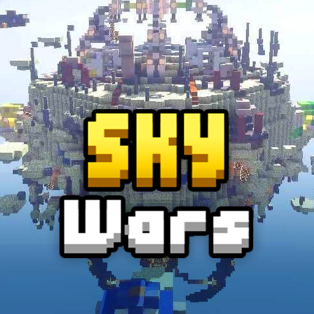

What is SkyWars?
SkyWars is a game on Hypixel released on June 14, 2015. It is Hypixel's take on the SkyWars game known across several other servers, in which players spawn on their islands, loot their chests or environment, and travel to the middle of the map to battle other players or gain better loot. The last player standing wins.
Gameplay
In SkyWars, players spawn on islands that contain chests with loot inside. Players can loot the items to gain items such as tools, armor, and projectiles. These tools allow players to battle each other and gain more loot. Players can also find stronger and special loot in chests in the middle of the map, which range from stronger tools, enchanted armor, and stronger projectiles. Chests usually refill twice, with the second refill placing ender pearls in every chest, and dragons appear after the second refill. The game ends when there is one player left, or when the time runs out.
Soul well
The Soul Well is an item-earning system in the SkyWars lobby. Players can roll the Soul Well using Souls obtained from killing players, winning games, or The Delivery Man's daily rewards. Each roll costs 10 Souls, though players can adjust the well to roll up to five times at once. Players could purchase Double Fortune for the Soul Well with 1,000 Hypixel Credits, though Double Fortune is now always active. Rewards from the Soul Well consist of kits and perks for all modes except Ranked SkyWars. Bags of SkyWars coins in varying sizes are also available. Soul upgrades can also be purchased with SkyWars coins to obtain or hold more souls when playing SkyWars.
Kits & Perks
Kits & Perks are a menu in the SkyWars shop which allows players to purchase kits and perks for different modes in SkyWars. Purchasable kits and perks include normal, insane, and mega modes. Kits can be purchased with prices varying by rarity, though they can be upgraded in Mega SkyWars for stronger items. Perks vary in prices and upgrades. Perks can usually be upgraded up to level III and V, or be a one-time purchase. Perks can be found in the Soul Well, or be purchased with coins. Right clicking on a perk you have purchased will activate/deactivate it.
Loot chests
Loot Chests are SkyWars mystery boxes released on January 11, 2018[2] that allow players to receive cosmetics and Tokens when opened. Loot Chests function similarly to Loot Chests from other games, in which players can open loot chests to receive three cosmetics, which range from in-game cosmetics and bags of Tokens. These cosmetics can be selected at any time in the SkyWars lobby, and they are applied when playing unless forbidden in events.
Tokens
Tokens are a special currency for SkyWars cosmetics. They can be obtained through daily quests and SkyWars Loot Chests duplicates of bags of Tokens. Tokens can be used to directly purchase cosmetics from the Shopkeeper.
Cosmetics
Cosmetics are obtained from SkyWars Loot Chests, Ranked SkyWars, or from the Shopkeeper using Tokens. Cosmetics cost different amounts of Tokens depending on the rarity of the cosmetic, or if it is an event-exclusive cosmetic. Common costs 5,000 Tokens, Rare costs 10,000 Tokens, Epic costs 25,000 Tokens, and Legendary costs 100,000 Tokens. Obtaining duplicate cosmetics from a Loot Chest returns an amount of tokens that is 10% of the cosmetic's value in the shop.
Leveling system
Levels were a system introduced to SkyWars in an update on December 18, 2018.[7] They appear similar to Bed Wars levels, though with several changes. Levels are progressed by earning SkyWars Experience in games. SkyWars Experience can be earned by killing players or winning games. Each level after 12 requires 10k XP to advance to the next level, and players achieve a new prestige every five levels.
Trivia
The maximum amount of skywars experience you can get in one game is 341, requiring you to get every kill as a heavenly head in a doubles game, and win the game with favor of the angel. The maximum amount of shards you can get in one skywars game is 10516, requiring 95 lucky kills in a mega skywars game with maxed out shard sheek and grand slam. The maximum amount of kills you can get in a solos game is 11, 22 in doubles, and 95 in mega. Ranked skywars and Mega skywars games cannot be corrupt games.